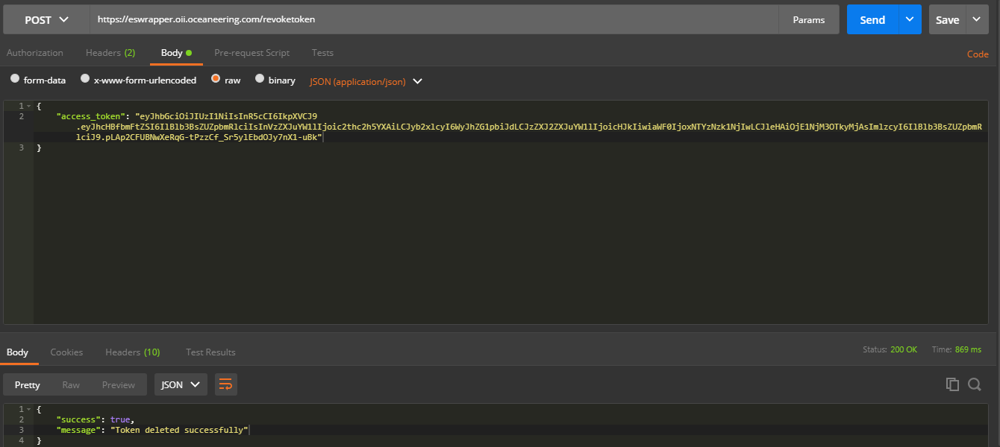
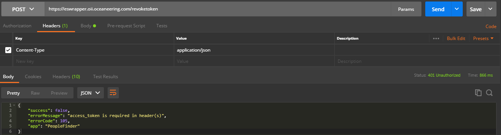

The Token Revocation API defines a trigger for clients to indicate to the
authorization server that is
elasticsearch that an access token is no longer needed.
The revoke token API is called at the stage of logging out the apllication which
initiates the revoketoken and
deletes the particular token from elasticsearch index
To revoke a access_token, an access_token and followings are the must have resources
revoketoken to initiate the revoke
serviceRevoke Token using REST client i;e POSTMAN. The endpoint to use for this would be
revoketoken. Token once
deleted cannot be recovered. However, access_tokens are
self-desctructive in nature.
If not refreshed, they vanish from the index after 24 hours.

Request Sample
Response Sample
All the error are handled which occured at the point of revoking token. The error code will be in JSON format and is user understandable.

Sample